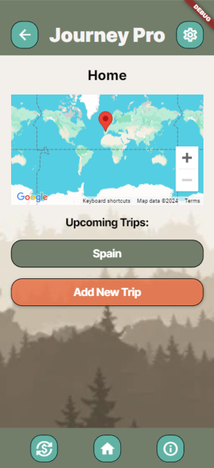

App Features
Discover how Journey Pro simplifies your travel experience and enhances every step of your journey.
-
Group Trip Planning
Effortlessly plan trips with friends or family. Create shared itineraries, set schedules for activities, and ensure everyone is on the same page for an organized and enjoyable experience.
 -
Expense Tracking
Keep track of shared expenses within the group. Log purchases, split costs fairly, and avoid confusion with transparent and easy-to-manage expense records.
-
Real-Time Currency Converter
Traveling abroad? Use the built-in currency converter to get accurate exchange rates instantly. This feature ensures you handle international transactions smoothly and confidently.

-
Interactive Local Maps
Find the best things to do and explore nearby attractions with our interactive local maps. Locate restaurants, activities, and essential services, all in one convenient interface.
-
Collaborative Scheduling
Coordinate activities with your group members using our collaborative scheduler. Suggest times, vote on options, and lock in plans that suit everyone.